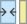
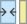
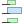
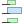
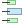

21.2.1. Layout Item တိုင်းတွင်ရှိသည့်ရွေးချယ်စရာများ (Layout Items Common Options)
QGIS တွင် မြေပုံတစ်ခုအား layout ပြုလုပ်ရန် item များစွာပါရှိပါသည်။ ၎င်းတွင် မြေပုံ၊ မြေပုံရည်ညွှန်းချက်၊ စကေးဘား၊ ရုပ်ပုံ၊ ဇယား၊ မြောက်အရပ်ပြမြှား၊ ဓာတ်ပုံအမျိုးအစား အစရှိသည်ဖြင့်ပါဝင်နိုင်သည်။ သို့သော်လည်း ၎င်းတို့တွင် ဘုံရွေးချယ်စရာများနှင့် လုပ်ဆောင်ချက်များပါရှိပြီး ၎င်းတို့ကိုအောက်တွင်ဖော်ပြထားသည်။
21.2.1.1. Layout item တစ်ခုဖန်တီးခြင်း (Creating a layout item)
Item များကို အသစ်မှစတင်ဖန်တီးခြင်းဖြင့်ဖြစ်စေ ရှိပြီးသား item များအပေါ်တွင် အခြေခံခြင်းဖြင့်ဖြစ်စေ အမျိုးမျိုးသော tool များကို အသုံးပြု၍ ဖန်တီးနိုင်သည်။
Layout item တစ်ခုအား အသစ်မှစတင်ဖန်တီးရန်-
သက်ဆိုင်ရာ tool ကို menu မှ ဖြစ်စေ Toolbox bar မှဖြစ်စေရွေးချယ်ပါ။
ထို့နောက်-
စာမျက်နှာပေါ်တွင် Click နှိပ်ပြီး ပေါ်ထွက်လာသည့် New Item Properties dialog ထဲတွင် တောင်းဆိုထားသော အရွယ်အစားနှင့် နေရာချထားမှု အချက်အလက်များကို ဖြည့်သွင်းပါ။ (အသေးစိတ်များအတွက် နေရာနှင့်အရွယ်အစား (Position and Size) ကိုကြည့်ပါ)-

Fig. 21.9 Item အသစ်၏ ဂုဏ်သတ္တိများ dialog
သို့မဟုတ် click နှိပ်၍ဖိဆွဲကာ item ၏ ကနဦး အရွယ်အစားနှင့် နေရာချထားမှု ကိုသတ်မှတ်ပါ။ ပိုမိုကောင်းမွန်သောနေရာချထားမှုအတွက် grids and guides snapping အားအသုံးပြုနိုင်သည်။
Note
Item များတွင် သီးသန့်ပုံသဏ္ဍာန်များရှိနိုင်သောကြောင့် drawing node (ရေးဆွဲသောအဆစ်) များနှင့် မြှားပုံများကိုရေးဆွဲသည့်နေရာတွင် click တစ်ချက်နှိပ်ခြင်းဖြင့်ဖြစ်စေ click-and-drag နည်းလမ်းသုံးခြင်းဖြင့်ဖြစ်စေအလုပ်ဖြစ်မည်မဟုတ်ပါ- ထို့ကြောင့် item ၏ node (အဆစ်) တစ်ခုစီအား click နှိပ်၍ နေရာချထားရန်လိုအပ်ပါသည်။ အသေးစိတ်အချက်အလက်များပိုမိုသိရှိလိုပါက အမှတ်များကိုအခြေခံသည့် ပုံသဏ္ဍာန်များ (The Node-Based Shape Items) တွင်ကြည့်ပါ။
ထို့အပြင်-
Toolbox toolbar မှ
 Select/Move item ခလုတ်ဖြင့် ရှိပြီးသား item တစ်ခုကိုရွေးချယ်နိုင်သည်။
Select/Move item ခလုတ်ဖြင့် ရှိပြီးသား item တစ်ခုကိုရွေးချယ်နိုင်သည်။အကြောင်းအရာ menu သို့မဟုတ် menu tool များကိုအသုံးပြု၍ item အား ကူးယူ/ဖြတ်ညှပ်၍ item အသစ်တစ်ခုအဖြစ် mouse ရောက်ရှိနေသည့် တည်နေရာတွင် ထားရှိရန် အသုံးပြုနိုင်သည်။
Item တစ်ခုကို စာမျက်နှာတစ်ခုမှ အခြားစာမျက်နှာတစ်ခုသို့ ပုံတူပွားယူရန်နှင့် စာမျက်နှာအသစ်တွင် မူရင်းအတိုင်း တူညီသော ကိုဩဒိနိတ်များတွင် နေရာချထားရန် အမိန့်ပေးချက်ဖြစ်သည့် Paste in Place (Ctrl+Shift+V) ကိုလည်းအသုံးပြုနိုင်ပါသည်။
ထို့အပြင် မှတဆင့် print layout template တစ်ခုကိုအသုံးပြု၍ item များကိုဖန်တီးနိုင်ပါသည် (အသေးစိတ်အချက်အလက်များအတွက် Layout စီမံခန့်ခွဲရာ (The Layout Manager) ကိုကြည့်ပါ)။
Tip
File browser ကိုအသုံးပြု၍ layout item များပေါင်းထည့်ခြင်း
File browser မှဖြစ်စေ Browser panel အားအသုံးပြုခြင်းဖြင့်ဖြစ်စေ print layout template (.qpt file) တစ်ခုကို print layout dialog တစ်ခုပေါ်သို့ drag-and-drop လုပ်ပါက QGIS သည် အလိုအလျောက် ထို template မှ item များအားလုံးကို layout သို့ပေါင်းထည့်လိုက်မည်ဖြစ်သည်။
21.2.1.2. Layout item များနှင့် အပြန်အလှန်လုပ်ဆောင်ခြင်း (Interacting with layout items)
ကောင်းမွန်ပြည့်စုံသော layout တစ်ခုရရှိရန် print layout ထဲရှိ item တစ်ခုစီတိုင်းကို နေရာရွှေ့နိုင်ပြီး အရွယ်အစားပြန်သတ်မှတ်နိုင်ပါသည်။ ရွှေ့ခြင်းနှင့် အရွယ်အစားပြန်လည်သတ်မှတ်ခြင်း လုပ်ငန်းစဉ်နှစ်ခုစလုံးအတွက် ပထမဆုံးအဆင့်မှာ Select/Move item tool အားဖွင့်၍ မိမိအလိုရှိသော item ပေါ်တွင် click နှိပ်ရန်ဖြစ်ပါသည်။
Select/Move item ခလုတ်ကိုသုံးခြင်းဖြင့် များစွာသော item များကို ရွေးမှတ်နိုင်သည်- item များပေါ်တွင် click နှိပ်၍ ဖိဆွဲခြင်းဖြင့်လည်းကောင်း Shift ခလုတ်ကိုနှိပ်ထား၍ အလိုရှိရာ item တစ်ခုချင်းစီအား click နှိပ်၍လည်းကောင်းရွေးမှတ်နိုင်သည်။ Item တစ်ခုအားရွေးမှတ်ထားခြင်းကိုပယ်ဖျက်ရန် Shift ခလုတ်ကိုနှိပ်ထား၍ ၎င်းအပေါ်တွင် click နှိပ်ပါ။
ရွေးမှတ်မှုတစ်ခါလုပ်ပြီးတိုင်း ရွေးမှတ်ထားသော item များ၏အရေအတွက်ကို status bar တွင်ပြသနေမည်ဖြစ်သည်။ menu ထဲတွင် item များအားလုံးကိုရွေးမှတ်ရန်၊ ရွေးမှတ်ထားမှုအားလုံးကိုပယ်ဖျက်ရန်၊ လက်ရှိရွေးမှတ်ထားမှုကိုပယ်ဖျက်၍ ကျန်ရှိနေသောအရာများကိုရွေးမှတ်ရန်အစရှိသော လုပ်ဆောင်ချက်များကိုတွေ့နိုင်သည်။
Item များကိုရွှေ့ခြင်းနှင့်အရွယ်အစားပြောင်းခြင်း (Moving and resizing items)
option ကိုအမှန်ခြစ်ဖြုတ်ထားပါက ရွေးချယ်ထားသော item တစ်ခု၏အနားသတ်နယ်နိမိတ်တွင် စတုရန်းများပေါ်နေပါမည်။ ၎င်းတို့ထဲမှတစ်ခုကို mouse ဖြင့်ရွှေ့ခြင်းဖြင့် သက်ဆိုင်သည့် ဦးတည်ရာလမ်းကြောင်းဘက်အတိုင်း အရွယ်အစားကိုပြောင်းလဲပေးမည်ဖြစ်သည်။ အရွယ်အစားပြောင်းလဲနေစဉ်တွင် Shift ခလုတ်ကိုနှိပ်ထားခြင်းဖြင့် ၎င်း၏မူလ အချိုးအတိုင်းထိန်းထားပေးမည်ဖြစ်သည်။ Alt နှိပ်လျှင် item ၏အလယ်ဗဟိုမှနေ၍ အရွယ်အစားကိုပြန်လည်သတ်မှတ်မည်ဖြစ်သည်။
Layout item တစ်ခုအားရွှေ့ရန် ၎င်းအား mouse ဖြင့်မှတ်၍ ဘယ်ဘက် click ခလုတ်အားဖိထား၍ ရွှေ့ပါ။ ရွှေ့ခြင်းအား အလျားလိုက်ဝင်ရိုး သို့မဟုတ် ဒေါင်လိုက်ဝင်ရိုးပေါ်တွင် အသေပြုလုပ်လိုပါက mouse ကိုရွှေ့နေစဉ် ကီးဘုဒ်ပေါ်ရှိ Shift ခလုတ်ကိုဖိထားပါ။ ကီးဘုဒ်ပေါ်ရှိ Arrow keys များကိုသုံး၍လည်း ရွေးမှတ်ထားသော item တစ်ခုကိုရွှေ့နိုင်သည်။ ရွေ့လျားမှုသည်နှေးလွန်းနေလျှင် Shift ကိုဖိထား၍ အရှိန်မြှင့်တင်နိုင်သည်။ ပို၍တိကျမှုလိုအပ်ပါက item ဖန်တီးခြင်းအတွက် အထက်တွင်ရှင်းလင်းဖော်ပြခဲ့သည့် Position and size ဂုဏ်သတ္တိများကိုအသုံးပြုနိုင်သကဲ့သို့ grid/guides snapping ကိုလည်းအသုံးပြုနိုင်သည်။
Item များစွာအား တပြိုင်တည်း အရွယ်အစားပြန်လည်သတ်မှတ်ခြင်းနှင့်ရွှေ့ခြင်းကို လုပ်ဆောင်သည့်နည်းသည် item တစ်ခုတည်းအတွက်လုပ်ဆောင်သောနည်းနှင့်အတူတူပင်ဖြစ်သည်။ QGIS တွင် အောက်ပါ အမျိုးမျိုးသော စည်းမျဉ်းများအတိုင်း ရွေးမှတ်ထားသော item များအားအလိုအလျောက်အရွယ်အစားပြန်လည်သတ်မှတ်ပေးမည့် အဆင့်မြင့် tool များပါရှိသည်-
Item တစ်ခုစီ၏အမြင့်သည်
 အရှည်ဆုံး သို့မဟုတ်
အရှည်ဆုံး သို့မဟုတ်  အတိုဆုံး ရွေးချယ်ထားသော item နှင့်ကိုက်ညီသည်
အတိုဆုံး ရွေးချယ်ထားသော item နှင့်ကိုက်ညီသည်Item တစ်ခုစီ၏အကျယ်ကို
 အကျယ်ဆုံး သို့မဟုတ် 
အကျယ်ဆုံး ရွေးချယ်ထားသော item နှင့်ကိုက်ညီသည်
အကျယ်ဆုံး သို့မဟုတ် 
အကျယ်ဆုံး ရွေးချယ်ထားသော item နှင့်ကိုက်ညီသည်Item များကို
 စတုရန်းပုံစံများအဖြစ် အရွယ်အစားကိုပြန်လည်သတ်မှတ်ခြင်း- item တစ်ခုစီကို စတုရန်းပုံစံတစ်ခုဖြစ်လာသည်အထိ ကြီးမားလာစေခြင်းဖြစ်သည်။
စတုရန်းပုံစံများအဖြစ် အရွယ်အစားကိုပြန်လည်သတ်မှတ်ခြင်း- item တစ်ခုစီကို စတုရန်းပုံစံတစ်ခုဖြစ်လာသည်အထိ ကြီးမားလာစေခြင်းဖြစ်သည်။
{kind=link}
ထို့အပြင် များစွာသော item များကိုတစ်ခုနှင့်တစ်ခုအကွာအဝေးတူညီစွာစီစဉ်ထားရှိရန် tools များလည်းရှိပါသည်-
Item များ၏ အစွန်းများ (ဘယ်၊ ညာ၊ အပေါ် သို့မဟုတ် အောက်ခြေ)၊
Item များ၏ အလျားလိုက် သို့မဟုတ် ဒေါင်လိုက်ရှိ အလယ်ဗဟိုများ၊
Item များအကြား အလျားလိုက် သို့မဟုတ် ဒေါင်လိုက် အကွာအဝေး။
Item များအားအုပ်စုဖွဲ့ခြင်း (Grouping items)
အုပ်စုဖွဲ့ခြင်းဖြင့် item အစုလိုက်ကို item တစ်ခုတည်းအဖြစ်ကိုင်တွယ်စီမံနိုင်မည် - item များကို အရွယ်အစားပြန်လည်သတ်မှတ်ခြင်း၊ ရွှေ့ခြင်း၊ ဖျက်ခြင်းနှင့် ကူးယူခြင်းတို့ကို တစ်ခုတည်းအနေဖြင့် အလွယ်တကူပြုလုပ်နိုင်ပါသည်။
Item များကို တစ်ခုထက်ပို၍ ရွေးချယ်ပြီးနောက် menu ရှိ  Group ခလုတ်ကိုနှိပ်၍ဖြစ်စေ Actions toolbar မှဖြစ်စေ right-click menu မှဖြစ်စေ item များအတွက် အုပ်စုတစ်ခုဖန်တီးနိုင်မည်ဖြစ်သည်။
Group ခလုတ်ကိုနှိပ်၍ဖြစ်စေ Actions toolbar မှဖြစ်စေ right-click menu မှဖြစ်စေ item များအတွက် အုပ်စုတစ်ခုဖန်တီးနိုင်မည်ဖြစ်သည်။ Group အမည်ရှိသော row တစ်ခုကို panel တွင်ထည့်သွင်းပေးသွားမည်ဖြစ်ပြီး ၎င်းအား အခြား Items panel’s object များကဲ့သို့ပင် lock ချထားခြင်း နှင့်ဖျောက်ထားခြင်းများပြုလုပ်နိုင်သည်။ အုပ်စုဖွဲ့ထားသော item များကို canvas ပေါ်တွင် တစ်ခုချင်းစီရွေးချယ်၍မရ ပါ။ တိုက်ရိုက်ရွေးချယ်မှုအတွက် Items panel ကိုအသုံးပြုပြီး အုပ်စုဖွဲ့ထားသည့် item များ၏ဂုဏ်သတ္တိများ panel ကိုဝင်ရောက်ရမည်ဖြစ်သည်။
အစိတ်အပိုင်းများကို ချုပ်ခြင်း (Locking items)
Item တစ်ခုအတွက် မှန်ကန်သောနေရာချထားမှုရရှိပါက ၎င်းကို menuမှ  Lock selected items ခလုတ်ကိုအသုံးပြုခြင်းဖြင့်ဖြစ်စေ Actions toolbar ကိုသုံး၍ ဖြစ်စေ panel ထဲရှိ item ၏ဘေးမှ အကွက်တွင်အမှန်ခြစ်၍ဖြစ်စေ lock ချထားနိုင်သည်။ Canvas ပေါ်တွင် Lock ချထားသော item များကို ရွေးချယ်နိုင်မည် မဟုတ် ပါ။
Lock selected items ခလုတ်ကိုအသုံးပြုခြင်းဖြင့်ဖြစ်စေ Actions toolbar ကိုသုံး၍ ဖြစ်စေ panel ထဲရှိ item ၏ဘေးမှ အကွက်တွင်အမှန်ခြစ်၍ဖြစ်စေ lock ချထားနိုင်သည်။ Canvas ပေါ်တွင် Lock ချထားသော item များကို ရွေးချယ်နိုင်မည် မဟုတ် ပါ။
Lock ချထားသော item များကို lock ပြန်ဖြုတ်လိုပါက panel ထဲတွင် item ကိုရွေး၍ ပေးထားသော အမှန်ခြစ်အကွက်တွင် ပြန်ဖြုတ်ခြင်းဖြင့်သော်လည်းကောင်း toolbar ပေါ်ရှိ သင်္ကေတများကိုအသုံးပြု၍လည်းကောင်း ပြုလုပ်နိုင်ပါသည်။
နေရာညှိခြင်းနှင့် ချထားခြင်း (Alignment and distribution)
 Raise selected items pull-down menu ထဲတွင် element များအား ဦးစားပေးဖော်ပြခြင်းနှင့်ပတ်သက်၍ အပေါ်တင်ခြင်း သို့မဟုတ် အောက်ချခြင်း တို့ကိုပြုလုပ်နိုင်သည်။ Print layout canvas ပေါ်ရှိ element တစ်ခုအားရွေးချယ်၍ ရွေးချယ်ထားသော element အား အခြား element များနှင့်နှိုင်းယှဉ်၍ အပေါ်တင် သို့မဟုတ် အောက်ချ ပြုလုပ်ရန် matching functionality (ကိုက်ညီခြင်းဆိုင်ရာလုပ်ဆောင်ချက်) အားရွေးချယ်ပါ။ ထို အစီအစဉ် (order) အား panel စာရင်းထဲတွင်ပြသထားမည်ဖြစ်သည်။ panel စာရင်းထဲရှိ အရာတစ်ခု၏ label အား click နှိပ်၍ ဖိဆွဲကာ အပေါ်တင်/အောက်ချ ပြုလုပ်နိုင်ပါသည်။
Raise selected items pull-down menu ထဲတွင် element များအား ဦးစားပေးဖော်ပြခြင်းနှင့်ပတ်သက်၍ အပေါ်တင်ခြင်း သို့မဟုတ် အောက်ချခြင်း တို့ကိုပြုလုပ်နိုင်သည်။ Print layout canvas ပေါ်ရှိ element တစ်ခုအားရွေးချယ်၍ ရွေးချယ်ထားသော element အား အခြား element များနှင့်နှိုင်းယှဉ်၍ အပေါ်တင် သို့မဟုတ် အောက်ချ ပြုလုပ်ရန် matching functionality (ကိုက်ညီခြင်းဆိုင်ရာလုပ်ဆောင်ချက်) အားရွေးချယ်ပါ။ ထို အစီအစဉ် (order) အား panel စာရင်းထဲတွင်ပြသထားမည်ဖြစ်သည်။ panel စာရင်းထဲရှိ အရာတစ်ခု၏ label အား click နှိပ်၍ ဖိဆွဲကာ အပေါ်တင်/အောက်ချ ပြုလုပ်နိုင်ပါသည်။

Fig. 21.10 Print layout ထဲရှိ တန်းညှိခြင်းအတွက်အထောက်အကူပြုလိုင်းများ
 Align selected items pull-down menu ထဲတွင် မြောက်များစွာသော တန်းညှိခြင်း ရွေးချယ်စရာများရရှိနိုင်သည် (Fig. 21.10 ကိုကြည့်ပါ)။ တန်းညှိခြင်း လုပ်ဆောင်ချက်တစ်ခုကို အသုံးပြုရန် element များကို ဦးစွာရွေးချယ်ပြီးနောက် အောက်ပါ တန်းညှိခြင်း သင်္ကေတများထဲမှတစ်ခုအား click နှိပ်ပါ-
Align selected items pull-down menu ထဲတွင် မြောက်များစွာသော တန်းညှိခြင်း ရွေးချယ်စရာများရရှိနိုင်သည် (Fig. 21.10 ကိုကြည့်ပါ)။ တန်းညှိခြင်း လုပ်ဆောင်ချက်တစ်ခုကို အသုံးပြုရန် element များကို ဦးစွာရွေးချယ်ပြီးနောက် အောက်ပါ တန်းညှိခြင်း သင်္ကေတများထဲမှတစ်ခုအား click နှိပ်ပါ-
- Align Left သို့မဟုတ်
 Align Right၊
Align Right၊  Align Top သို့မဟုတ်
Align Top သို့မဟုတ်  Align Bottom၊
Align Bottom၊ Align Center ရေပြင်ညီ သို့မဟုတ်
Align Center ရေပြင်ညီ သို့မဟုတ်  Align Center Vertical။
Align Center Vertical။
ရွေးချယ်ထားသော element များအားလုံးကို ၎င်းတို့၏ ဘုံ bounding box (အကျယ်အဝန်းနယ်) တွင် တန်းညှိပေးမည်ဖြစ်သည်။ Layout canvas ပေါ်တွင် item များကိုရွှေ့လိုက်သောအခါ နယ်နိမိတ်များ၊ အလယ်ဗဟိုများ သို့မဟုတ် ထောင့်များ ညီသွားလျှင် တန်းညှိခြင်းအတွက်အထောက်အကူပြုလိုင်းများ ပေါ်လာပါမည်။
Item များကို နေရာချထားမှုပိုမို ကြည့်ရှုရအဆင်ပြေစေမည့် နောက်ထပ်နည်းလမ်းတစ်ခုမှာ layout စာမျက်နှာပေါ်တွင် ၎င်းတို့၏တစ်ခုနှင့်တစ်ခုအကြားအကွာအဝေးကို ညှိရန်ဖြစ်ပါသည်။ အကွာအဝေးကို ညှိရန် item များကို ရွေးမှတ်ပြီး  Distribute Left Edges drop-down menu ကိုနှိပ်၍ အောက်ပါတို့ကိုလုပ်ဆောင်နိုင်ပါသည်-
Distribute Left Edges drop-down menu ကိုနှိပ်၍ အောက်ပါတို့ကိုလုပ်ဆောင်နိုင်ပါသည်-
Item များကို အကွာအဝေးတူညီစွာ
Distribute Left Edges (ဘယ်ဘက်အစွန်းများသို့ ဖြန့်ဝေနေရာချခြင်း) သို့မဟုတ်  Distribute Right Edges (ညာဘက်အစွန်းများသို့ ဖြန့်ဝေနေရာချခြင်း)
Distribute Right Edges (ညာဘက်အစွန်းများသို့ ဖြန့်ဝေနေရာချခြင်း)Item များကို အကွာအဝေးတူညီစွာ
 Distribute Top edges (အပေါ်ဘက်အစွန်းများသို့ ဖြန့်ဝေနေရာချခြင်း) သို့မဟုတ်  Distribute Bottom Edges (အောက်ခြေဘက်အစွန်းများသို့ ဖြန့်ဝေနေရာချခြင်း)
Distribute Top edges (အပေါ်ဘက်အစွန်းများသို့ ဖြန့်ဝေနေရာချခြင်း) သို့မဟုတ်  Distribute Bottom Edges (အောက်ခြေဘက်အစွန်းများသို့ ဖြန့်ဝေနေရာချခြင်း)Item များကို အကွာအဝေးတူညီစွာ Distribute Horizontal Centers (ရေပြင်ညီအလယ်ဗဟိုတွင် ဖြန့်ဝေနေရာချခြင်း) သို့မဟုတ်  Distribute Vertical Centers (ဒေါင်လိုက်အလယ်ဗဟိုတွင် ဖြန့်ဝေနေရာချခြင်း)
Item များအကြားတွင် တူညီသောအကွာအဝေးကိုထည့်သွင်းရန်-
 Distribute Horizontal Spacing Equally (ရေပြင်ညီအကွာအဝေးတူ ဖြန့်ဝေနေရာချခြင်း) သို့မဟုတ်
Distribute Horizontal Spacing Equally (ရေပြင်ညီအကွာအဝေးတူ ဖြန့်ဝေနေရာချခြင်း) သို့မဟုတ်  Distribute Vertical Spacing Equally (ဒေါင်လိုက်အကွာအဝေးတူ ဖြန့်ဝေနေရာချခြင်း)
Distribute Vertical Spacing Equally (ဒေါင်လိုက်အကွာအဝေးတူ ဖြန့်ဝေနေရာချခြင်း)
{kind=link}
{kind=link}
{kind=link}
21.2.1.3. Item များတွင်အတွေ့ရများသည့်ဂုဏ်သတ္တိများ (Items Common Properties)
Item Properties panel ၏အောက်ခြေတွင် Layout item များအတွက် ဘုံ ဂုဏ်သတ္တိများ- အနေအထားနှင့် အရွယ်အစား၊ လှည့်လည်ခြင်း၊ ဘောင်၊ နောက်ခံ၊ Item ID၊ ကိန်းရှင်များနှင့် ပုံဖော်ပြသခြင်း များကိုတွေ့နိုင်သည်။ (Fig. 21.11 ကိုကြည့်ပါ)
Fig. 21.11 Item များ၏ဘုံဂုဏ်သတ္တိများအုပ်စု
Note
ရွေးချယ်စရာ (option) အများစု၏ ဘေးတွင်ရှိသော  Data defined override သင်္ကေတသည် Expressions သို့မဟုတ် variables အားအသုံးပြု၍ ၎င်းရွေးချယ်စရာအား layer တစ်ခု၊ features attribute များ ၊ ဂျီသြမေတြီ သို့မဟုတ် အခြားသော layout item ၏ဂုဏ်သတ္တိတစ်ခုနှင့် ချိတ်ဆက်နိုင်စေပါသည်။ ပိုမိုသိရှိလိုသည့်အချက်အလက်များအတွက် Data အရ အစားထိုးလုပ်ဆောင်ခြင်းဆိုင်ရာ ပြင်ဆင်ချက် (Data defined override setup) ကိုကြည့်ပါ။
Data defined override သင်္ကေတသည် Expressions သို့မဟုတ် variables အားအသုံးပြု၍ ၎င်းရွေးချယ်စရာအား layer တစ်ခု၊ features attribute များ ၊ ဂျီသြမေတြီ သို့မဟုတ် အခြားသော layout item ၏ဂုဏ်သတ္တိတစ်ခုနှင့် ချိတ်ဆက်နိုင်စေပါသည်။ ပိုမိုသိရှိလိုသည့်အချက်အလက်များအတွက် Data အရ အစားထိုးလုပ်ဆောင်ခြင်းဆိုင်ရာ ပြင်ဆင်ချက် (Data defined override setup) ကိုကြည့်ပါ။
Position and size အုပ်စုဖြင့် item ရှိနေသော ဘောင်၏ အရွယ်အစားနှင့် အနေအထားကိုသတ်မှတ်နိုင်သည် (ပိုမိုသိရှိလိုသည့်အချက်အလက်များအတွက် နေရာနှင့်အရွယ်အစား (Position and Size) ကိုကြည့်ပါ)။
Rotation သည် element ၏ အလှည့် (rotation) ကိုသတ်မှတ်နိုင်သည် (ဒီဂရီဖြင့်)။
 Frame ဖြင့် item ၏ပတ်လည်ရှိ ဘောင်ကို ပြသနိုင်သကဲ့သို့ ဖျောက်ထားနိုင်သည်။ Color (အရောင်)၊ Thickness (အထူ) နှင့် Joinstyle (အဆက်ပုံစံ) widget များကိုသုံး၍ ၎င်းဂုဏ်သတ္တိများကို ချိန်ညှိနိုင်သည်။
Frame ဖြင့် item ၏ပတ်လည်ရှိ ဘောင်ကို ပြသနိုင်သကဲ့သို့ ဖျောက်ထားနိုင်သည်။ Color (အရောင်)၊ Thickness (အထူ) နှင့် Joinstyle (အဆက်ပုံစံ) widget များကိုသုံး၍ ၎င်းဂုဏ်သတ္တိများကို ချိန်ညှိနိုင်သည်။Background color menu ကိုသုံး၍ နောက်ခံအရောင်ကိုသတ်မှတ်နိုင်သည်။ [Color…] ခလုတ်ပေါ်တွင် click နှိပ်၍ အရောင်တစ်ခုကိုရွေးချယ်နိုင်မည့် သို့မဟုတ် စိတ်ကြိုက်အရောင်သတ်မှတ်ခြင်းပြုလုပ်နိုင်မည့် dialog တစ်ခုကိုပြသနိုင်သည်။ Alpha field setting များတွင်ပြောင်းလဲခြင်းဖြင့် အလင်းဖောက်နှုန်း (Transparency) ကို ချိန်ညှိနိုင်သည်။
Item ID ကိုအသုံးပြု၍ အခြား print layout item များနှင့်ချိတ်ဆက်နိုင်သည်။ ၎င်းသည် QGIS ဆာဗာနှင့် အခြားသော web client များအတွက်အသုံးဝင်သည်။ Item တစ်ခု (ဥပမာအားဖြင့်- မြေပုံတစ်ခု သို့မဟုတ် အညွှန်း တစ်ခု) အတွက် ID တစ်ခုကို သတ်မှတ်ထားနိုင်ပြီး web client မှ အဆိုပါ သီးသန့် item အတွက် ဂုဏ်သတ္တိ (ဥပမာ အညွှန်းစာသား) အား သတ်မှတ်ရန် data ကိုပေးပို့နိုင်သည်။ GetProjectSettings command သည် layout တစ်ခုတွင်ရရှိနိုင်သည့် item များနှင့်၎င်းတို့၏ ID များ စာရင်းကိုပြသပေးသည်။
Rendering mode တွင် item အား မည်သို့ပြသမည်ကို သတ်မှတ်နိုင်သည်။ ဥပမာအားဖြင့် blending mode အားအသုံးပြုခြင်း၊ item ၏အလင်းပိတ်နှုန်း (opacity) ကိုချိန်ညှိခြင်း သို့မဟုတ် Exclude item from exports (export ထုတ်ခြင်းတွင် item ကိုဖယ်ချန်ထားခြင်း) ကိုပြုလုပ်နိုင်ပါသည်။
နေရာနှင့်အရွယ်အစား (Position and Size)
Item အသစ်ဂုဏ်သတ္တိများ dialog ၏ feature များကို data-defined (data ဖြင့်သတ်မှတ်ထားသော) လုပ်ဆောင်နိုင်စွမ်းများဖြင့် တိုးချဲ့လုပ်ဆောင်ခြင်းဖြင့် ဤအုပ်စုသည် item များကို တိကျစွာ နေရာချထားနိုင်မည်ဖြစ်သည်။

Fig. 21.12 အနေအထားနှင့် အရွယ်အစား
Item အားအမှန်တကယ်ထားရှိမည့် စာမျက်နှာနံပါတ်၊
Item ၏ရည်ညွှန်းချက်အမှတ် (Reference point) ၊
ရွေးချယ်ထားသောစာမျက်နှာပေါ်ရှိ item ၏ Reference point မှ X နှင့် Y ကိုဩဒိနိတ်များ။ ဤတန်ဖိုးများကြား အချိုးကို
 ခလုတ်ပေါ်တွင် click နှိပ်၍ lock ချထားနိုင်သည်။ Widget ကို အသုံးပြုခြင်းဖြင့်ဖြစ်စေ Select/Move item tool အသုံးပြုခြင်းဖြင့်ဖြစ်စေ တန်ဖိုးတစ်ခုအား ပြောင်းလဲထားမှုများသည် ကိုဩဒိနိတ်နှစ်ခုလုံးအတွက်သက်ရောက်မှုရှိမည်ဖြစ်သည်။
ခလုတ်ပေါ်တွင် click နှိပ်၍ lock ချထားနိုင်သည်။ Widget ကို အသုံးပြုခြင်းဖြင့်ဖြစ်စေ Select/Move item tool အသုံးပြုခြင်းဖြင့်ဖြစ်စေ တန်ဖိုးတစ်ခုအား ပြောင်းလဲထားမှုများသည် ကိုဩဒိနိတ်နှစ်ခုလုံးအတွက်သက်ရောက်မှုရှိမည်ဖြစ်သည်။Item bounding box (အကျယ်အဝန်းနယ်) ၏ Width (အကျယ်) နှင့် Height (အမြင့်)။ ကိုဩဒိနိတ်များကဲ့သို့ပင် အကျယ်နှင့် အမြင့်ကြား အချိုးကို lock ချထားနိုင်သည်။
ပုံဖော်ပြသချိန် (Rendering mode)
QGIS တွင် vector နှင့် raster များကဲ့သို့ပင် layout item များအတွက် အဆင့်မြင့်ပုံဖော်ပြသခြင်းကို ပြုလုပ်နိုင်သည်။

Fig. 21.13 ပုံဖော်ပြသခြင်းပုံစံ
Blending mode - ဤ tool ဖြင့် ဂရပ်ဖစ် ပုံဖော်ပြသသော software သုံးမှသာ ရရှိနိုင်မည့် effect (အထူးပြုလုပ်ချက်) များကိုရရှိနိုင်ပါသည်။ အသုံးပြုသည့်ပုံစံပေါ်မူတည်၍ အပေါ်အလွှာနှင့်အောက်အလွှာရှိ item များ၏ pixel များကို ရောနှောဖော်ပြနိုင်သည် (Effect တစ်ခုချင်းစီအတွက် ဖော်ပြချက်အား ရောစပ်ခြင်းနည်းလမ်းများ (Blending Modes) တွင်ကြည့်ပါ)။
Transparency
 - ဤ tool သည် layout ထဲရှိ အောက်ခံ item တစ်ခုအားမြင်နိုင်စေရန် လုပ်ဆောင်ပေးသည်။ မိမိလိုအပ်သည့် မြင်နိုင်မှုပမာဏအားရရှိစေရန် slider ကိုအသုံးပြု၍ ကစားနိုင်သည်။ Slider ဘေးမှ menu တွင် မြင်နိုင်မှုအား ရာခိုင်နှုန်းဖြင့် တိတိကျကျ သတ်မှတ်နိုင်သည်။
- ဤ tool သည် layout ထဲရှိ အောက်ခံ item တစ်ခုအားမြင်နိုင်စေရန် လုပ်ဆောင်ပေးသည်။ မိမိလိုအပ်သည့် မြင်နိုင်မှုပမာဏအားရရှိစေရန် slider ကိုအသုံးပြု၍ ကစားနိုင်သည်။ Slider ဘေးမှ menu တွင် မြင်နိုင်မှုအား ရာခိုင်နှုန်းဖြင့် တိတိကျကျ သတ်မှတ်နိုင်သည်။- Exclude item from exports - Export ထုတ်ခြင်းအားလုံးတွင် item တစ်ခုကို ဖျောက်ထားရန်ရွေးချယ်နိုင်ပါသည်။ ဤအကွက်ကို အမှန်ခြစ်ပြီးနောက် PDF ၊ print အစရှိသည်ဖြင့် export ထုတ်သည့်အခါ item သည် ပါဝင်လာတော့မည်မဟုတ်ပါ။
ကိန်းရှင်များ (Variables)
Variables သည် layout item အဆင့်တွင် ရနိုင်သောကိန်းရှင်များအားလုံး (အများသုံး၊ ပရောဂျက်နှင့် ပေါင်းစပ်ကိန်းရှင်များအားလုံး) စာရင်းကို ပြသပေးပါသည်။ မြေပုံ item များတွင် မြေပုံ၏စကေး ၊ အတိုင်းအတာအကျယ်အဝန်း အစရှိသည့် တန်ဖိုးများကို အလွယ်တကူဝင်ရောက်ရယူနိုင်မည့် မြေပုံဆိုင်ရာ setting ကိန်းရှင်များလည်းပါရှိသည်။
Variables တွင် item အဆင့် variable များကိုလည်း စီမံကိုင်တွယ်နိုင်မည်ဖြစ်သည်။  ခလုတ်ကို click နှိပ်၍ စိတ်ကြိုက် variable အသစ်တစ်ခုကိုထည့်သွင်းနိုင်သည်။ အလားတူပင်
ခလုတ်ကို click နှိပ်၍ စိတ်ကြိုက် variable အသစ်တစ်ခုကိုထည့်သွင်းနိုင်သည်။ အလားတူပင်  ခလုတ်အား click နှိပ်၍ စိတ်ကြိုက် item အဆင့် variable များကိုစာရင်းထဲမှပယ်ဖျက်နိုင်သည်။
ခလုတ်အား click နှိပ်၍ စိတ်ကြိုက် item အဆင့် variable များကိုစာရင်းထဲမှပယ်ဖျက်နိုင်သည်။
Variables ကိန်းရှင် များတွင် တန်ဖိုးများကို သိမ်းဆည်းခြင်း (Storing values in Variables) အပိုင်းတွင် ကိန်းရှင်များအသုံးပြုမှုနှင့်ပတ်သက်သည့် အသေးစိတ်အချက်အလက်များကိုကြည့်ရှုနိုင်ပါသည်။